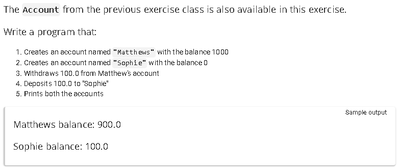

Package main.java.progOO2.p02
package main.java.progOO2.p02
Programming Object Oriented II: YourFirstBankTransfer
This package continues to reinforce essential Object-Oriented Programming (OOP)
concepts using the Account class.
Core OOP Concepts Illustrated:
- Encapsulation: The fields
balanceandownerare declaredprivateto restrict direct access and protect the objectâs state. - Constructor: A parameterized constructor initializes the account with an owner name and initial balance.
- Method Definition: The class defines clear public methods
such as
deposit(),withdrawal(), andsaldo()to manipulate and retrieve internal data in a controlled way. - Method Overriding:
toString()is overridden to provide a meaningful string representation of the accountâs data. - Abstraction: The implementation details of how the balance is stored or updated are hidden from the user of the class.
Note: This class is protected and should not be modified, as it is part of a guided learning module on proper OOP design practices.

-
ClassesClassDescriptionContent introduction to object-oriented programming
